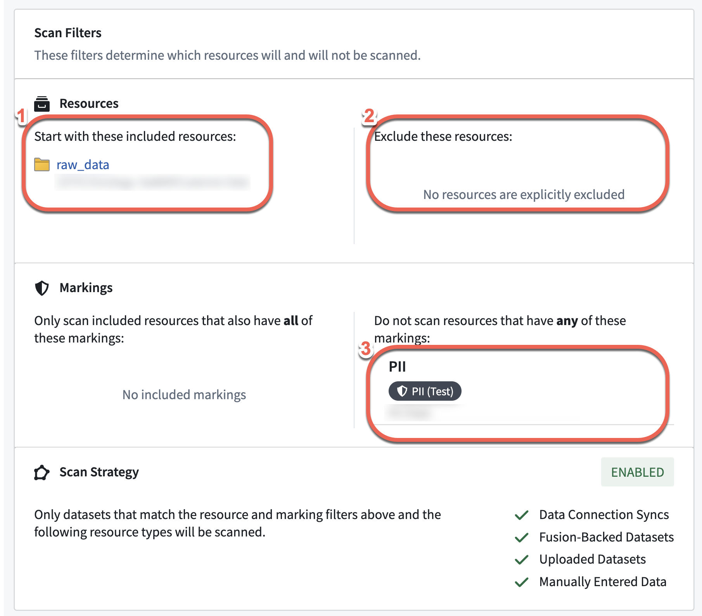
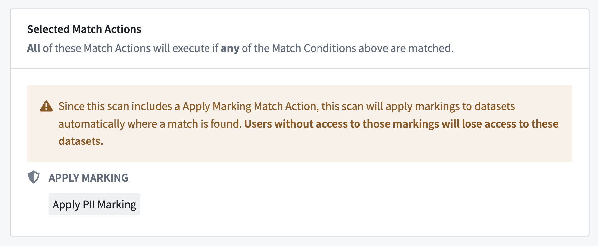

Sensitive Data Scanner (SDS) automates a configurable integration of many of Foundry's most powerful capabilities (such as Markings), so should be used by those with some baseline proficiency of Foundry. The following are a set of best practices and guidelines to have in mind when using the tool.
As SDS can be configured to scan across an entire space, concerns about the compute cost / time of each one-time or recurring scan may arise. There are two factors to consider when thinking about compute time: the number of datasets, and the type of match condition. We have provided scan optimization guidelines for both of these factors below:

Running a content-based regex search over the entire dataset is exhaustive and often resource-intensive. SDS optimizes compute by biasing toward checking the schema for column names prior to performing a content-based regex search. In practice, this means that SDS prevents builds if there is no possibility of a match based on columns when using either of the following regex match conditions:
For scans that use language model match conditions, consider using a row subset while tuning prompts or when exhaustive coverage is not required. Use Scan all rows when you need complete detection before applying match actions.
The provision of access to a Marking is binary (all-or-nothing). Regardless of role, a user cannot access a resource unless they satisfy all Marking requirements. Learn more about Markings. When a scan finds matching datasets, it applies markings automatically. Mistakenly using restrictive markings can block users from essential workflows and be hard to fix. Users should be careful and limit the match action's scope to a specific subset.

Sensitive Data Scanner finds and protects sensitive data in Foundry. Permissions are carefully set so a user can only do what they are allowed to with SDS without exceeding their individual permissions on the resource. Data Governance Officers can monitor the whole organization's data without needing risky Owner permissions on every resource.
This following section presents the two ways a user can interact with Foundry resources using SDS:
| Action | Data Governance Officer + Space Viewer | Space Owner | Space Editor | Space Viewer (Only) |
|---|---|---|---|---|
| Configure MC & MA | âï¸ | âï¸ | ||
| Manage recurring scans | âï¸ | âï¸ | ||
| Run sensitive data scans | âï¸ | âï¸ | ||
| Cancel sensitive data scans | âï¸ | âï¸ | ||
| View sensitive data scan status | âï¸ | âï¸ | âï¸ | âï¸ |
| View MC / MA | âï¸ | âï¸ | âï¸ | âï¸ |
As a resource Owner, a user has full control over SDS scanning and can manage interactions with the resource, including configuring settings and canceling scans. Editors can only request SDS interactions based on the Owner's preferences - such as running a scan with pre-configured match conditions, while Viewers can only see SDS outcomes. However, a "Data Governance Officer" role grants scanning privileges like a Space Owner.